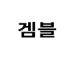

고대 이집트 문명 테마의 라의 행운 비디오 슬롯에 오신 걸 환영합니다. 이 게임은 여러 프렐이 모드, 릴 동기화, 무료 스핀, 겜블 및 많은 짜릿한 기능을 제공합니다.
게임 소개
라의 행운은 10개의 고정된 페이 라인으로 플레이됩니다. 이 게임에는 3개 이상이 페이 라인의 맨 왼쪽 위치에서 시작하는 주변 릴에서 연속되는 경우 지급되는 10개의 일반 심볼이 있습니다.
플레이 모드 : 플레이어는 일반, 슈퍼 또는 메가 플레이 모드를 선택할 수 있습니다.
일반 플레이 모드 일반 스핀 버튼을 사용하세요. 이 모드를 선택해서 일반 게임을 플레이하세요.
슈퍼 플레이 모드 강화된 스핀 버튼을 사용하세요. 이 모드를 선택해서 화살을 스핀하고 매 스핀에서 릴 동기화를 활성화하세요. 화살표가 녹색 구역에 나타나면 메가 심볼로 릴이 스핀됩니다. 화살표가 빨간색 구역에 나타나면 베팅을 잃습니다.
메가 플레이 모드 강화된 스핀 버튼을 사용하세요. 이 모드를 선택해서 화살을 스핀하고 무료 스핀을 직접 입력하세요. 화살표가 녹색 구역에 나타나면 무료 스핀을 바로 이용할 수 있게 해주는 전체 화면의 메가 스캐터 심볼로 릴이 스핀됩니다. 화살표가 빨간색 구역에 나타나면 베팅을 잃습니다.
무료 스핀
전체 화면의 스크롤 심볼은 8회의 무료 스핀을 트리거합니다. 무료 스핀 보너스 전에, 2개의 다른 심볼이 선택되어 무료 스핀 게임에 사용됩니다. 선택된 심볼은 특별 확장 심볼로 행동합니다. 일반 승리 조합이 발생한 승리 후에 특별 심볼이 2개 또는 3개 이상의 릴에 나타나는 경우, 특별 심볼이 확장하여 나타난 릴의 모든 세로 위치를 덮습니다. 낮은 지급 심볼이 먼저 행동하며, 지급된 높은 지급 심볼이 행동합니다. 무료 스핀 중에 동기화된 릴이 모든 스핀에서 행동하며, 잠재적으로 특별 확장 심볼을 강화합니다. 3X3 스캐터가 화면에 가득 차면 무료 스핀 중에 추가 무료 스핀이 보상될 수 있습니다. 8회의 추가 무료 스핀이 같은 확장 심볼로 보상됩니다.
보너스 구매
이 기능은 '보너스 구매' 표시기에 표시된 가격에 구매할 수 있습니다. 이용할 수 있는 잔액이 보너스 구매 가격과 같은 경우 잔액이 0으로 줄어서 기능을 자동으로 트리거합니다.
겜블
이 게임은 플레이어가 숨겨진 카드의 색깔 또는 모양을 맞춰서 메인 게임에서만 총 상금을 곱할 수 있는 선택적인 겜블 라운드를 제공합니다. 정답 색깔은 X2를 지급하고 정답 모양은 X4를 지급합니다 이 겜블 라운드는 최대 5회 연속 또는 최대 €250,000에 상응하는 금액까지 플레이될 수 있습니다
플레이 방법
-
판돈/코인 액면가를 선택합니다.
-
게임 주기를 시작하려면 스핀 버튼을 클릭(데스크톱) 또는 터치(모바일)하세요.
게임 버튼
|
아이콘 |
데스크톱 |
모바일 |
작업 |
|
|
스핀 | 스핀 | 한 번의 사이클 시작 |
| 최대 베팅 | (설정 메뉴의 판돈 선택 화면에 포함됨) | 최대 판돈 레벨에 베팅 구성을 설정합니다. 스핀 버튼이 눌리면 시작됩니다. | |
|
|
자동 진행 | 스핀을 길게 눌러서 자동 진행 (또는 설정 메뉴에 포함됨) | 게임의 모든 자동 진행 옵션을 표시하는 메뉴 화면이 나타나면 여러 사이클을 동시에 시작할 수 있습니다. |
|
|
판돈 선택 | 판돈 선택 (또는 설정 메뉴에 포함됨) | 플레이어가 베팅의 레벨을 선택할 수 있는 판돈 옵션을 표시합니다. |
|
|
설정 메뉴 | 설정 메뉴 | 다음을 포함하는 별도 설정 화면을 엽니다. 홈, 오디오, 게임 설정, 기록, 정보/도움말 및 캐셔 (필요한 경우) |
|
|
오디오 | (메인 설정 구역은 설정 메뉴에서 이용할 수 있음) | 데스크톱 - 오디오 설정 메뉴를 열어서 플레이어가 즉시 음악 또는 효과음을 켜거나 끌 수 있게 합니다. |
|
|
터보 플레이 | (게임 설정 메뉴에서 이용 가능) | 릴의 속도를 빠른 스핀으로 변경합니다. |
|  | 겜블 | 겜블 | 기본 게임 승리 후에 겜블 기능이 시작됩니다. |
|
|
받기 | 받기 | 승리 금액을 받고 겜블 기능을 건너뛰기합니다. |
 |
플레이 모드 | 플레이 모드 | 플레이어가 베팅하려는 플레이 모드를 선택합니다. |
설정 버튼
| 심볼 | 아이콘 | 행동 |
| 게임 기록 |
|
플레이어에게 게임 세션 내에서 플레이되는 게임 사이클의 목록을 표시합니다. |
| 베팅 설정 |
|
여기에서 플레이어가 게임의 판돈 값을 결정하거나, 다른 옵션을 선택할 수 있습니다. |
| 자동 진행 |
|
다양한 표준 및 연장된 자동 진행 옵션을 선택할 수 있고 시작할 수 있는 페이지를 실행합니다. 손해 한도도 포함될 수 있습니다. |
| 게임 설정 |
|
여러 일반 설정 옵션을 표시합니다(예: 세션 중에 재생되는 사운드를 결정할 수 있는 플레이어 선택 가능 오디오 설정). |
| 홈 |
|
현재 게임 세션에서 나가고(최종 프롬프트 이후) 운영자의 메인 게임 메뉴 페이지로 돌아갑니다. |
기타 게임 정보
-
다른 라인의 일치하는 승리는 함께 추가되며 플레이어에게 지급됩니다.
-
코인 값 - 현재 설정의 이론적인 판돈 상금을 표시합니다. 모든 승리는 현금 상금 승리로 변환할 수 있는 코인 값으로 곱해지는 코인으로 표시됩니다. 현금/코인 - 플레이어의 선택에 따라 현금(자금 값) 또는 코인(크레딧의 수)으로 계정 잔액을 표시합니다. 기본 표시는 현금입니다. 현금과 코인의 전환(반대 포함)은 원래 값에 근사치에 도달하는 2자리 값으로 처리괴지만, 게임에서 코인 전환은 항상 정수로 표시됩니다.
-
베팅 - 현재 설정의 베팅 값을 표시합니다. 베팅 크기는 고정된 페이 라인의 개수로 곱해진 1 코인입니다.
-
총 베팅은 40 코인인 베팅 배수로 곱해지는 코인 값입니다. 총 베팅은 코인 값에 라인 당 베팅을 곱한 값입니다.
-
최대 베팅(데스크톱 전용) - 최대로 가능한 코인 값을 설정합니다.
-
스핀 버튼 - 게임을 시작합니다. 릴이 스핀 중일 때, 스핀 버튼이 터보 정지 버튼으로 바뀝니다. 터보 정지 버튼을 눌러서 릴을 바로 멈춥니다.
-
자동 진행 - 매번 스핀 버튼을 누를 필요 없이 게임을 플레이하도록 설정할 수 있습니다. 자동 진행 버튼을 눌러서 자동 진행할 라운드의 횟수를 선택합니다(또는 스핀 버튼을 길게 눌러서 자동 진행 메뉴 열기(모바일)). 게임 설정에서 자동 진행을 정지할 때 추가 조건을 선택할 수 있습니다. 일부 게임 클라이언트 버전의 손해 한도는 자동 진행 세션 중에 설정된 한도 이상 잃는 것을 막아줍니다. 자동 진행을 수동으로 멈추려면 자동 진행 정지 버튼을 누르세요.
-
승리 - 현재 또는 이전 승리 지급의 승리를 표시합니다.
-
현금/코인 - 플레이어의 선택에 따라 현금(자금 값) 또는 코인(크레딧의 수)으로 계정 잔액을 표시합니다. 기본 표시는 현금입니다.
-
현금과 코인의 전환(반대 포함)은 원래 값에 근사치에 도달하는 2자리 값으로 처리괴지만, 게임에서 코인 전환은 항상 정수로 표시됩니다.
플레이어 배당
-
전체적인 이론적인 플레이어 배당은 96.01%입니다.
추가 정보